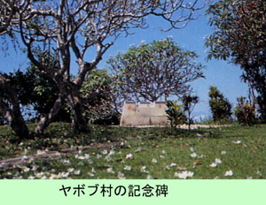

|
第３７ 真夜中にマダン沖の敵艦から艦砲射撃を受ける
 この頃の戦況は日本軍にとって、極めて不利で、悲観的な状況でした。猛軍は、日に日に追い詰められていて、近日中に、敵がこのマ ダンにも上陸して来るかも知れない、という噂が流れていました。従って、敵が何時？上陸して来るか判らない状況でしたから、てっき り敵の上陸作戦の前触れだと思い、この時は凄く緊張しました。私は、目には見えない、山田一等兵の声のする方向のジャングルに向かって 『這っても良いから、通信所に来い。敵が上陸して来たら、お前には構っておれん！』と、大声を出して叫びました。 時計を見たら、午前１時半を少し過ぎていました。私も大急ぎで、暗闇のジャングルの中を手探りしながら、勘を便りに、通信所に出向 しました。ジャングルの中では、地響きをたてて砲弾が炸裂する。同時にジャングルの中を物凄いぶぎみな音がそこらぢゅうに響き渡る。 物凄い一方的な艦砲射撃が２時間以上も続きました。私どもは、息を殺して、片唾をのみ、じーっと長い時間、耐え忍ぶだけでした。若 し、敵が、上陸してきたら、日本刀で渡り合い、最後には自分のピストルで自決しようと考え、艦砲射撃の間ぢゅう、右手で、しっかり とピストルを握り締めていました。 やっとの事で、午前４時半頃になって、さすがの猛烈な艦砲射撃も終りました。東の空はまだ暗い。敵の大部隊が上陸してくる気配 もなくなりました。ホッと深い溜め息が出てきて、安堵しました。 右手でしっかり掴んでいたピストルには、べっとり脂汗がにじんで居ました。恐怖を覚えていた証拠です。手も脂汗をかいていたのでし た。私は、敵が上陸してきたら、日本刀で立ち向かうか、ピストルで自決しようか、と２時間半も苦悩していたのです。 ところで、夜もすっかり明けて、一段落し昼頃になってから、山田一等兵の事を思い出し衛生兵の今井上等兵に、昨夜の山田一等兵は その後どうしているか？と尋ねてみた。すると今井上等兵は 『はい、腰の抜けたのは直って、内務班に居ます』という。私は、自分の怖かった事は忘れて、大きな声を出して笑ってしまった。 ところで、世の中には、何時もいろんな者が居るもので、昨夜もまた、敵がマダンのジャングル陣地を艦砲射撃している様を、アムロ ン高地から見ていた兵士がいた。この兵隊が、私に話したところによると マダン沖に、敵の軍艦が四隻、一列に並んで、猛軍が布陣しているマダンのジャングルめがけて艦砲射撃してくる様は壮絶な美しい眺 めでした。敵は弾着を確かめるため、曳光弾を発射する。その曳光弾が描く光芒は、暗夜に花火を見るようで実に美しかったです、と私 に喋ってくれました。 ジャングルの中で、花火のように美しい曳光弾を打ち込まれる我々は、たまったものではなかった。砲弾はどちらから飛んでくるのか 見当も付かない、砲弾にやられるのではないか、また、敵が上陸して来るのではないか？という恐怖心を覚え誠に複雑な境地でした。腰 を抜かした山田一等兵も彼を看護した今井衛生兵も、その後、名誉の戦死をとげている。 |